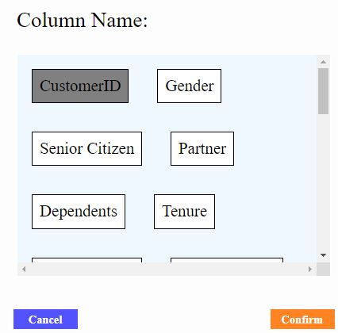

About This System
The system aims to automate the repetitive data cleaning and modelling process with simple parameter tuning for each model. General report of each chosen algorithm performance on uploaded dataset will be shown in visual. An interactive graph visualization on how parameters affect the model performance will be presented to help users in their own data modelling process. This system can help the users in knowing the poor quality data column and algorithm and parameters that are more appropriate for the respective dataset, which can help to eleminate some unnecessary process in finding the optimal model for their projects. Only supervised learning which are classification and regression are available for the system. Complex processes such as image processing and natural language process are currently unavailable.
K Nearest Neighbors Classifier
Random Forest Classifier
Decision Tree Classifier
Logistic Regression
Support Vector Machine Classiffier
XGBoost
Naive Bayes
K Nearest Neighbors Regressor
Random Forest Regressor
Decision Tree Regressor
Linear Regression
Support Vector Machine Regressor
Polynomial Regression
Step 1: Upload and verify file
Ensure that the verification of the file is success beased on the stated requirement.
Step 2: Choose machine learning type and algorithm
Algorithm will differ based on the chosen model type.
Step 3: Choose target column.
After clicking button 'select'
Target column must be chosen while index column is optional.
Step 4: Wait for the data modelling process
Clicking on the refresh button a top right corner will check the current progress as data cleaning and modelling can be time consuming. Report will be availale once the process complete.